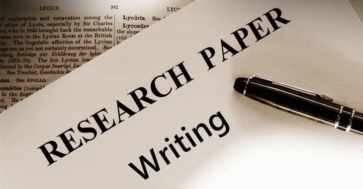

Research-Oriented Work and Crafting Impactful Research Papers
Research is the foundation of progress in science, technology, and industry. In a rapidly evolving world, research-oriented work not only helps us understand current challenges but also presents opportunities for developing new solutions. Crafting impactful research papers that contribute to the existing body of knowledge is vital for researchers and professionals alike.
"Research is about asking the right questions, seeking innovative solutions, and presenting your findings in a way that can inspire change."
The journey of research involves identifying gaps in existing knowledge and formulating hypotheses that drive experiments and studies. A well-conducted research study not only provides valuable insights but also contributes to the wider academic and industrial communities.
Writing a research paper requires clarity, precision, and the ability to communicate complex ideas effectively. A strong paper is structured to present the problem, methodology, results, and analysis in a logical sequence. Importantly, it must highlight the significance of the research findings, suggesting future directions and potential real-world applications.
Researchers should focus on maintaining integrity, transparency, and rigorous validation of their work. The impact of research can be far-reaching, shaping industries, influencing policies, and addressing the most pressing global challenges.